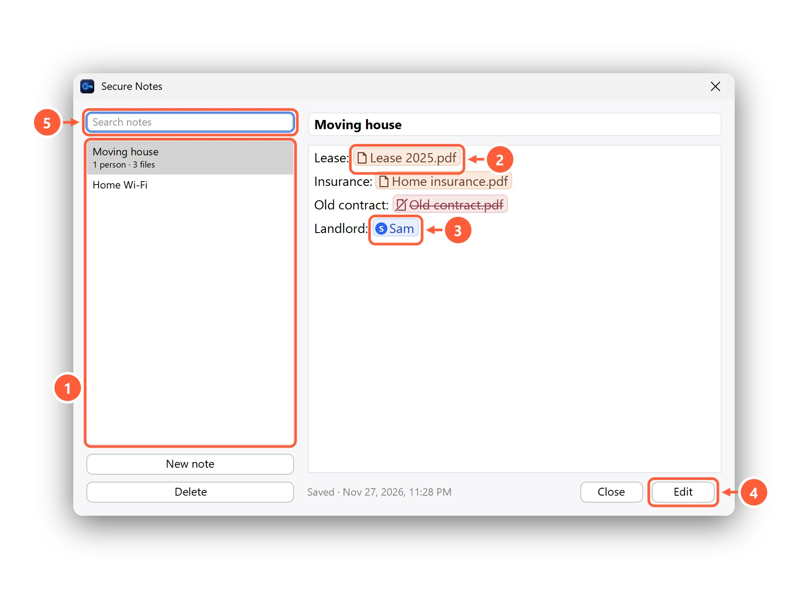
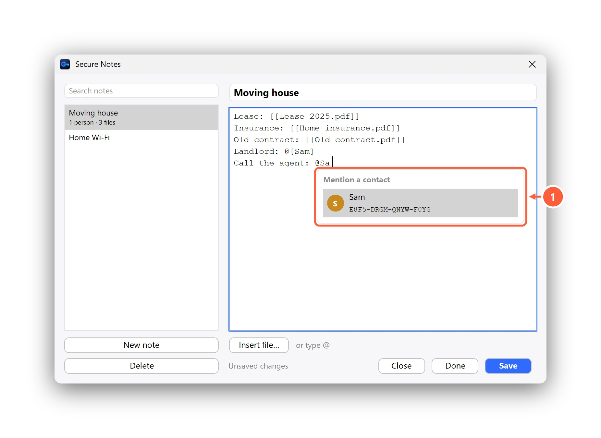

Keep secure notes in your vault
Secure Notes is for small secrets that aren't files: Wi-Fi passwords, locker codes, account numbers. Notes are encrypted inside your vault with the same keys as your files.

- Your notes; the second line shows who and what each mentions
- Click a file to open it or show it in its folder
- Click a person to share a file with them
- Edit the note; Done shows the links again
- Search titles, text and people
- A note without links opens ready to type, as before. A note with links opens ready to read: press Edit to change it, then Done. Save saves and keeps you editing. Notes also save when you switch notes or close the window.
- Link a file: while editing, press Insert file… and choose an encrypted file (.enc). While you edit, the link shows as its name, like
[[Lease 2025.pdf]]; where the file is stays in the note but isn't shown. After Done, click the file to Open in Clavis or Show in folder. Open in Clavis wipes the decrypted content when you re-lock the file; Windows or the app you use may still list the file's name in its recent files. - Mention a person Premium: while editing, type @ and the first letters of a contact's name, then choose them and press Enter. Click them later to Share a file with them or to see Notes that mention them.

- Pick a contact and press Enter
- A crossed-out file couldn't be found: it was moved or deleted, its drive isn't connected, or you restored your vault on another PC. Click it and choose Locate it… to point the link at the file, or Remove link to keep just its name.
- A file on another computer on your network shows that computer's name. Clavis asks before it connects to it.
- Search looks through titles and text, and finds the notes that mention a person when you type their name.
- Linking files is part of Clavis Pro; mentioning contacts is part of Clavis Premium. With Pro, people mentioned earlier show as plain names.
- Links are stored inside the note, encrypted with your vault, and are included in a vault backup (Premium). Older versions of Clavis show them as plain text and keep them.
Can't find what you need? All help articles · Email us